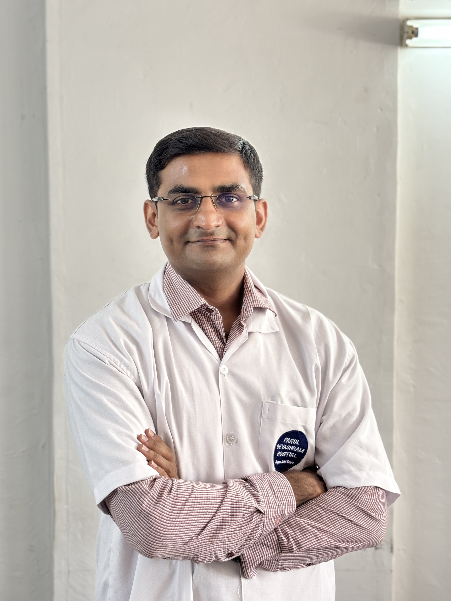
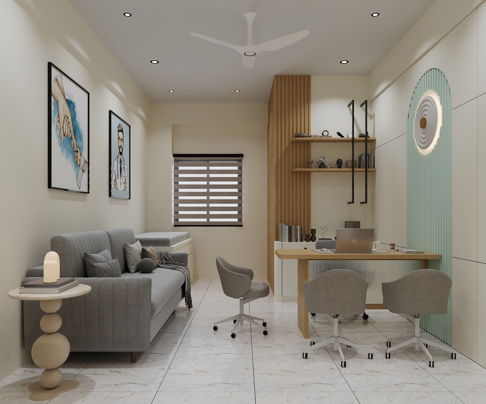
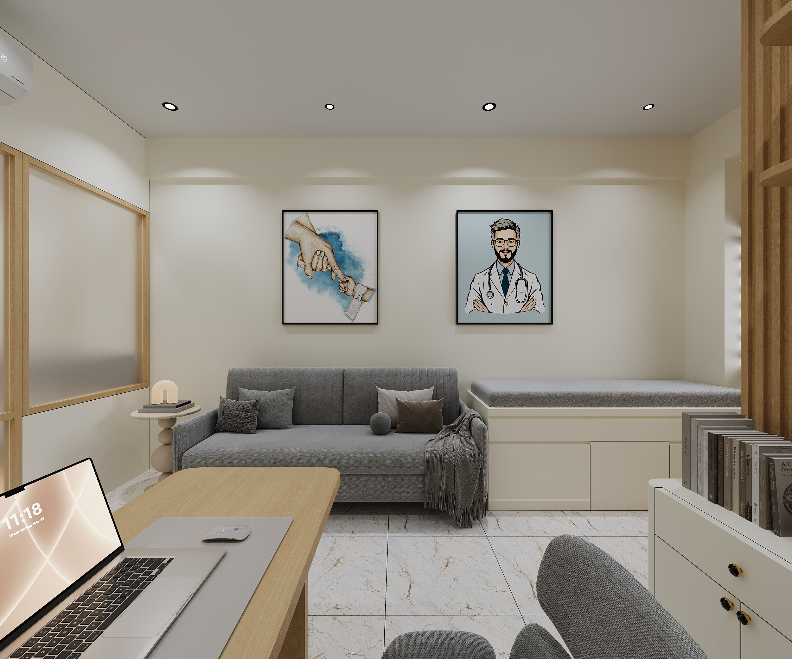
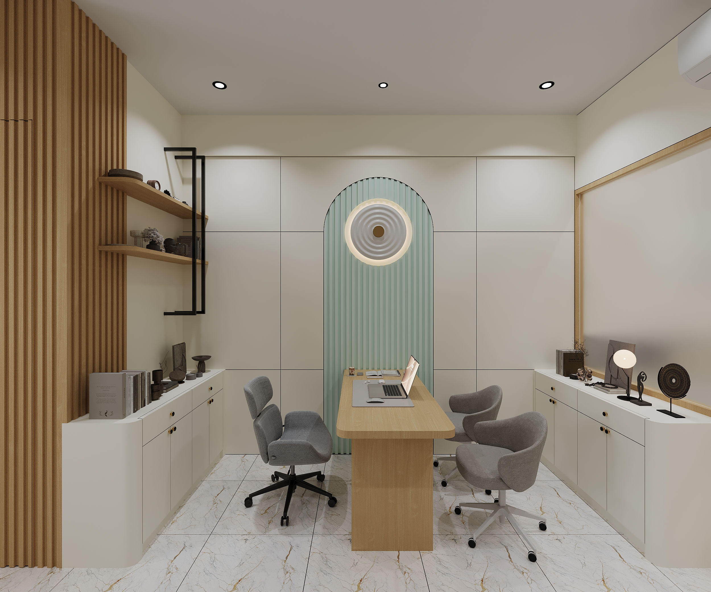
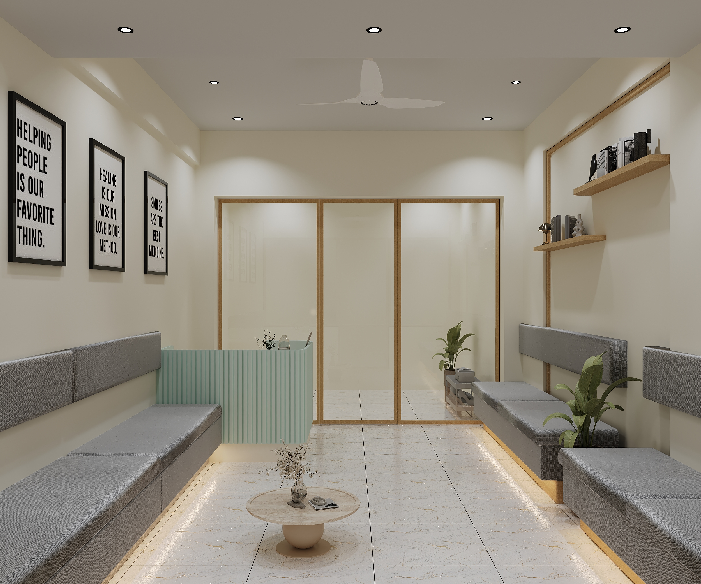

Meet Your Specialist
MBBS, MS (Neurosurgery)
With over 7+ years of experience in brain and spine surgery, Dr. Pratik Patel is dedicated to providing compassionate, expert care for patients with neurological and spinal conditions. Trained at premier medical institutions, the doctor brings precision, innovation, and a patient-first approach to every procedure.
Medical Degree
Advanced Surgical Training
Brain & Spine Care




Advish Brain and Spine Care provides advanced neurosurgical treatment and patient-centered care. Our clinic focuses on neurological disorders, spine conditions, and modern surgical procedures using the latest medical technology.